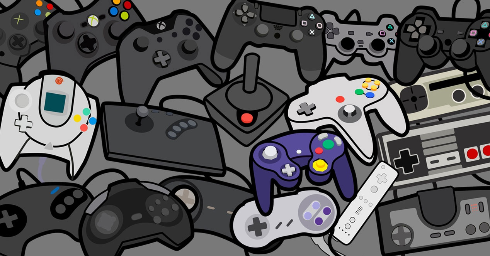
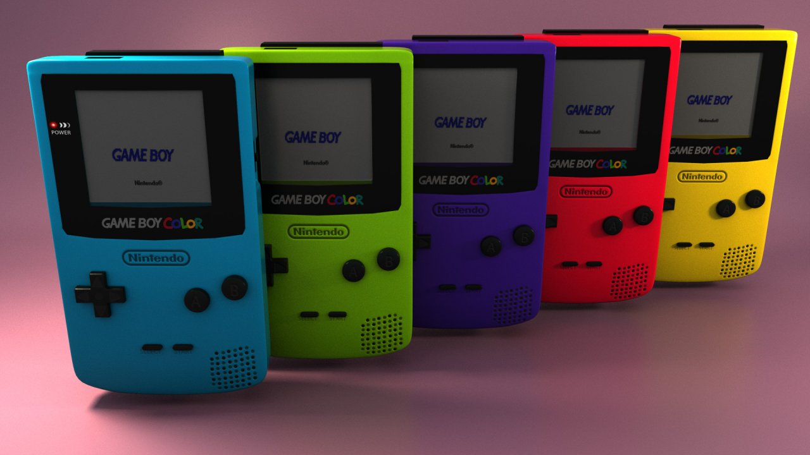

Entretenimiento
Inicio
Los primeros sistemas de videoconsolas fueron diseñados únicamente para jugar videojuegos pero a partir de la quinta generación de videoconsolas han sido incorporadas características importantes de multimedia, internet, tiendas virtuales, servicio en línea como: Nintendo Network, PlayStation Network, y Xbox Live.

Una videoconsola es un pequeño sistema electrónico que está diseñado para ejecutar juegos desarrollados en un computador personal o servidor. Al igual que los ordenadores personales, pueden adoptar diferentes formas y tamaños; de este modo, pueden ser de sobremesa, es decir, requieren ser conectadas a un televisor para la visualización del videojuego, y a la red eléctrica para su alimentación, en la cual suelen consumir 12 voltios, o bien el dispositivo electrónico videoconsola portátil, que cuenta con una pantalla de visualización integrada y una fuente de alimentación propia (baterías o pilas).

Los videojuegos pueden presentarse en forma de cartuchos de plástico que protegen una placa con chips en los que está almacenado el software, o también en disquete, tarjeta de memorias, disco compactos (como en PlayStation), discos GD-ROM (en el caso de Sega Dreamcast), discos "GOD" (en el caso de Nintendo GameCube), DVD (como en PlayStation 2, Wii, Xbox, Xbox 360), o Blu-ray (en el caso de la PlayStation 3, Xbox One, PlayStation 4). Estos dos últimos formatos ópticos de almacenamiento son los que se han impuesto como estándar en las videoconsolas de séptima generación.